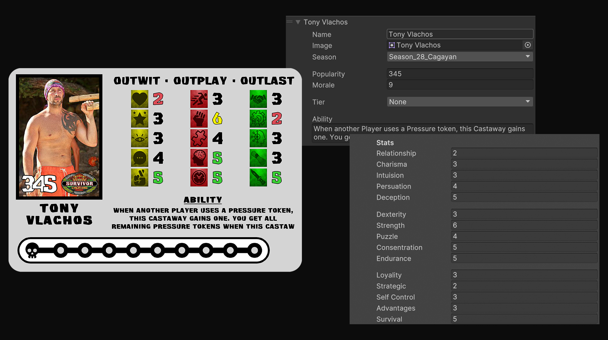
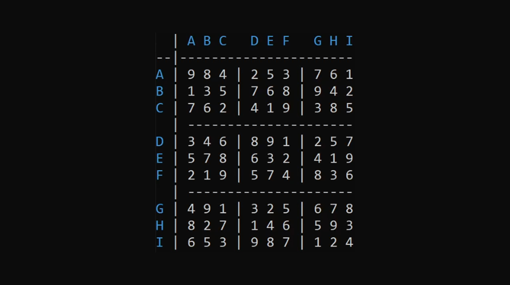

Arídea: The Forgotten Desert
Bachelor project in "Game Technology and Simulation".
A Survival Adventure game demo featuring the first biome in the deserty world of Arídea.
Made with C# for "Unity Engine".
Demo Link
Bachelor Report
Learn more

Moose Simulator
4th semester exam project in the course "Gamification".
A moose simulation keeping track of the population and the surrounding ecosystem.
Colaborating with extern "Christer Kalen" for the "Swedish Environmental Protection Agency".
Made with C# for "Unity Engine".
Gamification Document
Project Report
Learn more

Khepris Scarab
2nd semester exam project in the course "Programming II".
A Racing game taking place in ancient Egypt featuring one track with a "Time-Attack Mode" and an "Adventure Mode".
Made with C++ for "Unreal Engine 4".
Game Design Document
Group Project Report
Learn more
Terrain from PointCloud
5th semester Folder Exam in the course "Visualisation and Simulation".
I've triangulate a PointCloud to setup a terrain from eastern Norway.
Physics is implemented using barycentric coordinates so that raindrops can move on the terrain.
Made with C# for "Unity Engine".
Project Report
Learn more
AI Car Track Learning
5th semester Folder Exam in the course "Game Engine Architecture".
I Built a Neural Network to teach a car to drive through a track without crashing.
Made with C# for "Unity Engine".
Project Report
Learn more
Connect 4
1st semester Folder assignment in the course "Programming I".
I created a Connect 4 game using the "Visual Studio" terminal featuring an animated "Com vs. Com"-mode.
Made with C++ in VisualStudio.
Learn more
Mastermadness
My favorite mini-game in the Board Game "Mansions of Madness" is its "Mastermind".
Unfortunately, it is not guarantied to get it during a game, so I wanted to see if I could make something similar to it for unlimited use.
Made with C# for "Unity Engine".
Learn more
Bingo Board Generator
During social gatherings, such as "Eurovision" and "E3", we often have competitions, such as a "Bingo".
Due to its lengthy setup, I made a simple program to automate this process.
Made with C# for "Unity Engine".
Learn more
Naruto Tabletop Game Card Generator
Since 2017 I have been working on a tabletop game set to the Naruto universe.
Making cards in Photoshop can be tedious.
So, after getting some coding knowledge I built my own card generator for the card types in my game.
Made with C# for use in the "Unity Engine" editor.
Check out the Board Game
Learn more

Survivor Tabletop Game Card Generator
As a fan of the reality TV show "Survivor", I have wanted to make a tabletop game based on it for a long time.
I have expended upon what I've learned from making the "Naruto Board Game Card Generator", being able to create more detailed cards.
Made with C# for use in the "Unity Engine" editor.
Learn more
Map Creator
During my second month of learning to code, I looked into procedural generation and was fascinated of how it worked.
I tried to make a 2D pixel map generator, making rules for the terrian.
Made with C++ in VisualStudio.
Learn more

Sudoku Creator
I have always been fascinated with the creation of Sudoku boards.
So I wanted to see if I could make an algorithm able to make solvable ones.
Made with C++ in VisualStudio.
Learn more
Harry Potter Word Counter
Sometimes I get questions on my mind that get stuck.
When driving home from class one day, I got the urge to find out how many times "Harry" was mentioned throughout the Harry Potter Books.
So of course did I make a program to resolve this question, and made it so that any word can be searched and resolved.
Made with C++ in VisualStudio.
Learn more
In my free time I like making tabletop games, play innebandy and go hiking.
Here are some of my Tabletop projects.